Damage by ammo and quality
The first table lists each ammo type the weapon can load. Damage is one projectile at the base value (Special quality), Armour and Comp. multiply it when the projectile hits an armour plate or a component, and Falloff is how the damage drops over distance. The second table works out one whole shot (damage × pellets × the quality multiplier) for every quality, at close range and before the difficulty setting.
| Ammo | Damage | Pellets | Armour | Comp. | Falloff / range |
|---|---|---|---|---|---|
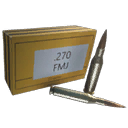 .270 Full Metal Jacket Ammo | 100 | 1 | ×1 | ×1 | drops to 60% by ~1000 m max 1,000 m |
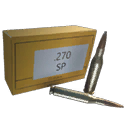 .270 Soft-Point Ammo | 100 | 1 | ×0.75 | ×1.25 | drops to 60% by ~1000 m max 1,000 m |
| Ammo | Q1 | Q2 | Q3 | Q4 | Q5 | Q5 vs armour | Q5 vs components |
|---|---|---|---|---|---|---|---|
| .270 Full Metal Jacket Ammo | 50 | 62 | 75 | 88 | 100 | 100 | 100 |
| .270 Soft-Point Ammo | 50 | 62 | 75 | 88 | 100 | 75 | 125 |
| Quality | Q1 | Q2 | Q3 | Q4 | Q5 | Q6 |
|---|---|---|---|---|---|---|
| Damage multiplier | ×0.5 | ×0.62 | ×0.75 | ×0.88 | ×1 | ×1 |
- A Dilapidated copy does 50% of the damage of a Special one (×0.5 against ×1), so upgrading quality is a straight damage increase.
- Against exposed components, .270 Soft-Point Ammo is best (×1.25 damage to components).
Experimental ammo of this calibre
The game files flag these rounds as experimental-only: they are for the experimental version. The column shows one shot at the experimental multiplier (×1).
| Ammo | Damage | Pellets | Armour | Comp. | Falloff / range | Effects |
|---|---|---|---|---|---|---|
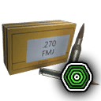 .270 Medical Ammo Exp. only | 0 | 1 | ×1 | ×1 | drops to 60% by ~1000 m max 1,000 m | Heals 20 (4 m) Medical rounds heal players near the impact; the pulse is healing, not damage. |
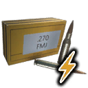 .270 Shock Ammo Exp. only | 100 | 1 | ×1 | ×1 | drops to 60% by ~1000 m max 1,000 m | Special effect not included (it lives in a separate effect file). |
| Ammo | Q6 | Q6 vs armour | Q6 vs components |
|---|---|---|---|
| .270 Shock Ammo Exp. only | 100 | 100 | 100 |
Rounds whose projectile does no damage and that heal (medical ammo) are left out of this table: see Effects for the heal.
Experimental versionExperimental "Älgstudsare"
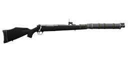
Experimental "Älgstudsare" is the Experimental version of this weapon. Its damage multiplier is ×1 (Special: ×1). See experimental weapons for the other experimental weapons.
The game files give the experimental version its own versions of 4 ammo types. These replace the normal values when fired from it. The damage column is one shot at the experimental multiplier (×1).
| Ammo (change from normal) | Damage | Pellets | Q6 | Armour | Comp. | Effects |
|---|---|---|---|---|---|---|
| .270 Shock Ammo damage 100 → 0; adds blast; adds staged blast | 0 | 1 | 0 | ×1 | ×1 | Blast 10 (1 m); players 10 (1 m) Blast grows in 4 stages (table below) |
| .270 Medical Ammo adds blast; adds staged blast; no heal pulse | 0 | 1 | 0 | ×1 | ×1 | Blast 3 (2 m); players 3 (2 m) Blast grows in 4 stages (table below) This experimental version replaces the heal with a blast (stages table below). |
| .270 Full Metal Jacket Ammo damage 100 → 0; adds blast; adds staged blast | 0 | 1 | 0 | ×1 | ×1 | Blast 10 (1 m); players 10 (1 m) Blast grows in 4 stages (table below) |
| .270 Soft-Point Ammo damage 100 → 0; adds blast; adds staged blast | 0 | 1 | 0 | ×0.75 | ×1.25 | Blast 10 (1 m); players 10 (1 m) Blast grows in 4 stages (table below) |
.270 Shock Ammo: blast by flight time
The longer the bullet has been in the air, the bigger its blast.
| Condition | Blast vs machines | Radius (m) | Blast vs players | Radius (m) |
|---|---|---|---|---|
| Bullet in flight ≥ 0.15 s | 30 | 2 | 20 | 2 |
| Bullet in flight ≥ 0.5 s | 130 | 4 | 30 | 4 |
| Bullet in flight ≥ 1 s | 200 | 6 | 40 | 6 |
| Bullet in flight ≥ 1.5 s | 300 | 8 | 50 | 8 |
.270 Medical Ammo: blast by flight time
The longer the bullet has been in the air, the bigger its blast.
| Condition | Blast vs machines | Radius (m) | Blast vs players | Radius (m) |
|---|---|---|---|---|
| Bullet in flight ≥ 0.15 s | 6 | 3 | 6 | 3 |
| Bullet in flight ≥ 0.5 s | 10 | 4 | 10 | 4 |
| Bullet in flight ≥ 1 s | 15 | 6 | 15 | 6 |
| Bullet in flight ≥ 1.5 s | 20 | 8 | 20 | 8 |
.270 Full Metal Jacket Ammo: blast by flight time
The longer the bullet has been in the air, the bigger its blast.
| Condition | Blast vs machines | Radius (m) | Blast vs players | Radius (m) |
|---|---|---|---|---|
| Bullet in flight ≥ 0.15 s | 30 | 2 | 20 | 2 |
| Bullet in flight ≥ 0.5 s | 130 | 4 | 30 | 4 |
| Bullet in flight ≥ 1 s | 200 | 6 | 40 | 6 |
| Bullet in flight ≥ 1.5 s | 300 | 8 | 50 | 8 |
.270 Soft-Point Ammo: blast by flight time
The longer the bullet has been in the air, the bigger its blast.
| Condition | Blast vs machines | Radius (m) | Blast vs players | Radius (m) |
|---|---|---|---|---|
| Bullet in flight ≥ 0.15 s | 30 | 2 | 20 | 2 |
| Bullet in flight ≥ 0.5 s | 130 | 4 | 30 | 4 |
| Bullet in flight ≥ 1 s | 200 | 6 | 40 | 6 |
| Bullet in flight ≥ 1.5 s | 300 | 8 | 50 | 8 |
Augments24 of 28 fit
Augments go into slots that depend on quality. Following the in-game rules: Worn and Good weapons take one Primary augment, Exceptional and Special take a Primary and a Support augment, and Dilapidated and experimental weapons take none. A ✓ means the augment fits this weapon at that quality, as the game's equipment compatibility table says.
Primary augments
| Augment | Q2 | Q3 | Q4 | Q5 | Restriction | |
|---|---|---|---|---|---|---|
| Acidic | ✓ | ✓ | ✓ | ✓ | – | |
| Adhesive Rounds | ✓ | ✓ | ✓ | ✓ | – | |
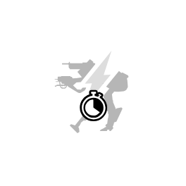 | EMP Detonation | ✓ | ✓ | ✓ | ✓ | – |
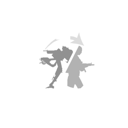 | Health Stealing | ✓ | ✓ | ✓ | ✓ | – |
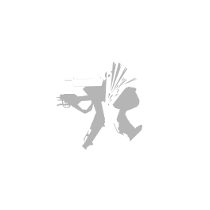 | Machine Disarmer | ✓ | ✓ | ✓ | ✓ | – |
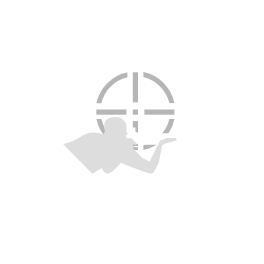 | Prone Specialization | ✓ | ✓ | ✓ | ✓ | Melee weapons cannot use this augmentation. |
| Rapid Reload | ✓ | ✓ | ✓ | ✓ | Melee weapons cannot use this augmentation. | |
| Scorching | ✓ | ✓ | ✓ | ✓ | Explosive weapons cannot use this augmentation. | |
| Sharpshooter | ✓ | ✓ | ✓ | ✓ | Melee weapons and explosive weapons cannot use this augmentation. | |
 | Small Fryer | ✓ | ✓ | ✓ | ✓ | – |
| Structure Destructor | ✓ | ✓ | ✓ | ✓ | – | |
 | Titan Toppler | ✓ | ✓ | ✓ | ✓ | – |
| Unstoppable Shells | ✓ | ✓ | ✓ | ✓ | Melee weapons and explosive weapons cannot use this augmentation. | |
| Uranium Infused | ✓ | ✓ | ✓ | ✓ | – |
Don't fit: Final Round (Only handguns can use this augmentation.); Trick Shot Master (Only shotguns and melee weapons can use this augmentation.)
Support augments
| Augment | Q4 | Q5 | Restriction | |
|---|---|---|---|---|
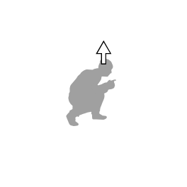 | Crouching Tiger | ✓ | ✓ | Melee weapons cannot use this augmentation. |
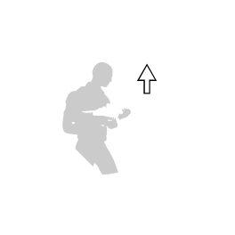 | Hip Shooter | ✓ | ✓ | Melee weapons cannot use this augmentation. |
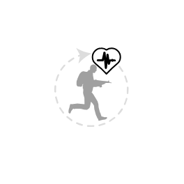 | Hit and Run | ✓ | ✓ | – |
 | Oversized Magazine | ✓ | ✓ | Melee weapons and explosive weapons cannot use this augmentation. |
| Quick Learner | ✓ | ✓ | – | |
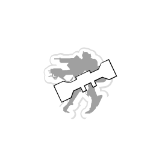 | Scope Scout | ✓ | ✓ | Only weapons that can have a scope attached can use this augmentation. |
| Skilled Spotter | ✓ | ✓ | – | |
| Slow and Steady | ✓ | ✓ | Melee weapons cannot use this augmentation. | |
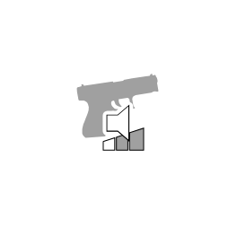 | Sound Muffling | ✓ | ✓ | – |
| Stabilization | ✓ | ✓ | Melee weapons cannot use this augmentation. |
Don't fit: Flurry of Blows (Only melee weapons can use this augmentation.); Power Attacker (Only melee weapons can use this augmentation.)
Skins2
Skins change only the look. All skins: weapon skins.
 Street Art - "Älgstudsare" Hunting Rifle
Street Art - "Älgstudsare" Hunting RifleWhere to find it
The world files place 39 copies of the "Älgstudsare" Hunting Rifle at fixed spots (on top of the random weapon crates). Each spot has a fixed quality; this table counts them by region.
| Region | Dilapidated | Worn | Good | Exceptional | Total |
|---|---|---|---|---|---|
| Archipelago | 7 | – | – | – | 7 |
| South Coast | – | – | 2 | – | 2 |
| Farmlands | 3 | 4 | 3 | – | 10 |
| Forest | 1 | 4 | – | – | 5 |
| Marshlands | – | 2 | 4 | – | 6 |
| North Coast | 1 | 1 | 1 | 1 | 4 |
| Himfjäll (Alpine Unrest) | – | 2 | 3 | – | 5 |
| Total | 12 | 13 | 13 | 1 | 39 |
The map opens on part of the 39 spots; zoom out (−) or drag to see the rest, open Detailed coordinates below, or open the full map.
Detailed coordinates39 spots
Every spot, with the nearest named map location and its distance. Coordinates are the game's world x / z; Map opens the interactive map on that spot.
Ammo and related weapons
Ammo it loads: .270 Full Metal Jacket Ammo, .270 Soft-Point Ammo.
Experimental-only rounds (for the experimental version): .270 Medical Ammo, .270 Shock Ammo.
Other hunting rifles: Meusser Hunting Rifle, Vintovka 1891.